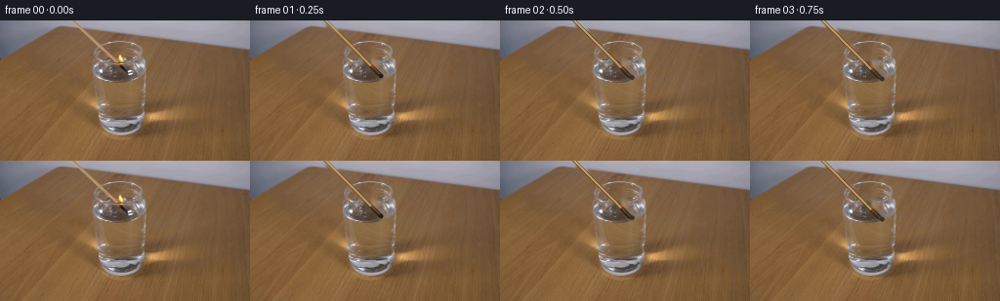
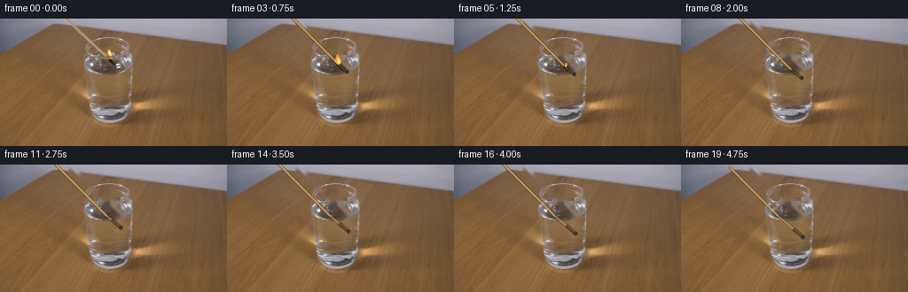
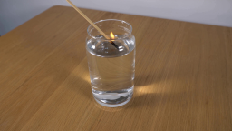
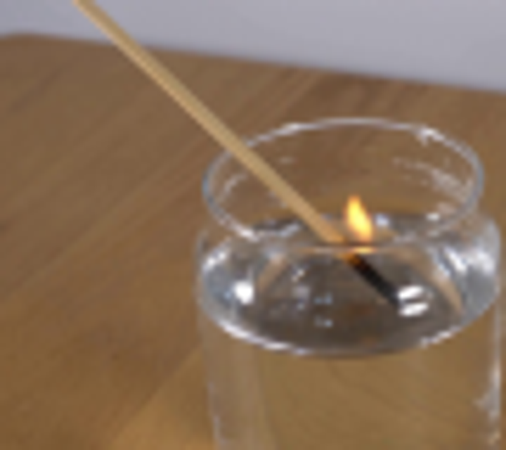
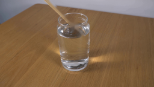
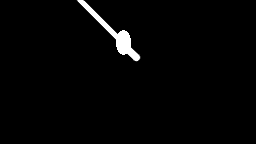
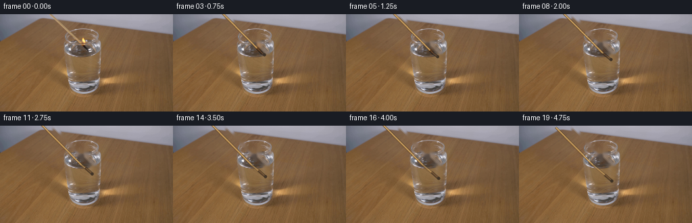
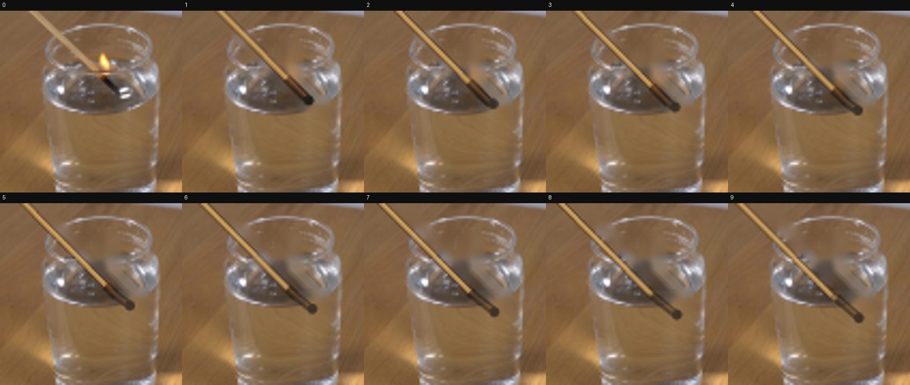
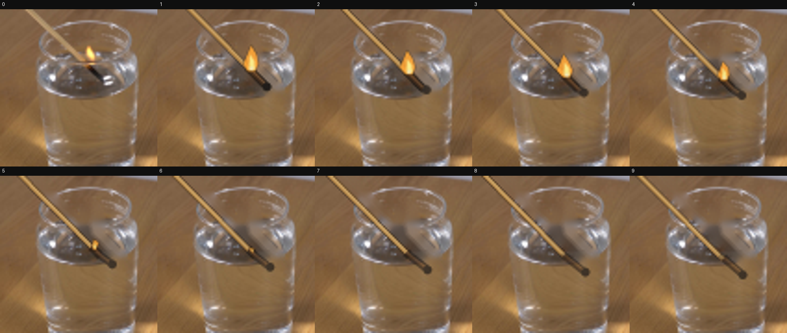
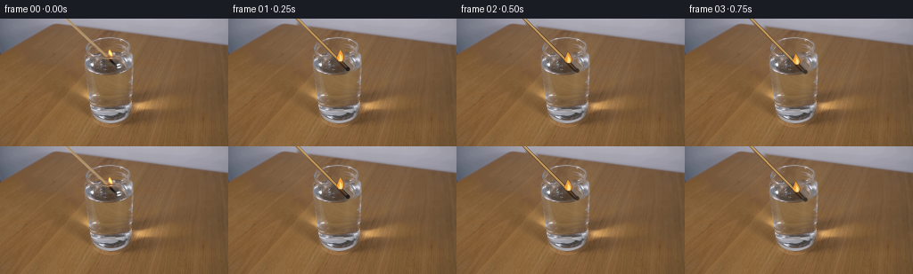

CODING AGENTS AS PIXEL WORLD MODELS
traex/GPT-5.6-Sol · 0111
点击播放 · 原生 RGB 像素
逐轮保存的候选
回放视频、检查图与代码变化。
每份候选均可单独播放。实际图片检查记录在下方工具轨迹中。
候选 01播放与检查图
点击播放 · 原生 RGB 像素


展开代码变化
--- 上一保存版本
+++ 本次保存版本
@@ -0,0 +1,232 @@
+from pathlib import Path
+import math
+import cv2
+import numpy as np
+from PIL import Image, ImageDraw
+import artifact_io
+
+CASE_DIR = Path(__file__).resolve().parent
+W, H = 256, 144
+SS = 4
+
+
+def rgba_layer():
+ return np.zeros((H * SS, W * SS, 4), np.uint8)
+
+
+def line(draw, points, fill, width):
+ draw.line([(round(x*SS), round(y*SS)) for x, y in points], fill=fill,
+ width=max(1, round(width*SS)), joint="curve")
+
+
+def composite_rgb(base, layer):
+ a = layer[..., 3:4].astype(np.float32) / 255.0
+ rgb = layer[..., :3].astype(np.float32)
+ return np.clip(base.astype(np.float32)*(1-a) + rgb*a, 0, 255).astype(np.uint8)
+
+
+def downsample(layer):
+ return cv2.resize(layer, (W, H), interpolation=cv2.INTER_AREA)
+
+
+def add_flame(frame, anchor, scale, phase):
+ """Small translucent, softly glowing match flame."""
+ if scale <= 0:
+ return frame
+ ax, ay = anchor
+ # Warm halo, kept restrained so it looks photographic rather than graphic.
+ yy, xx = np.mgrid[0:H, 0:W]
+ sx = 5.2 * max(.55, scale)
+ sy = 8.0 * max(.55, scale)
+ cy = ay - 5.0*scale
+ glow = np.exp(-(((xx-ax)/sx)**2 + ((yy-cy)/sy)**2)*1.7) * (0.25*scale)
+ warm = np.zeros_like(frame, dtype=np.float32)
+ warm[..., 0], warm[..., 1], warm[..., 2] = 255, 151, 45
+ f = frame.astype(np.float32)
+ f = f*(1-glow[...,None]) + warm*glow[...,None]
+ frame = np.clip(f, 0, 255).astype(np.uint8)
+
+ lay = rgba_layer()
+ d = ImageDraw.Draw(Image.fromarray(lay), "RGBA")
+ # Flame leans and flickers slightly to the right while remaining attached.
+ lean = 0.7*math.sin(phase*1.7)
+ h = 13.0*scale
+ ww = 5.2*scale
+ pts = [
+ ((ax-2.3*scale)*SS, (ay+1.0)*SS),
+ ((ax-ww+lean)*SS, (ay-3.2*scale)*SS),
+ ((ax-1.0+lean)*SS, (ay-h)*SS),
+ ((ax+2.0+lean)*SS, (ay-h*.63)*SS),
+ ((ax+ww*.72)*SS, (ay-3.0*scale)*SS),
+ ((ax+2.0*scale)*SS, (ay+1.0)*SS),
+ ]
+ d.polygon(pts, fill=(255, 166, 53, 220))
+ # Bright yellow core and almost-white base.
+ inner = [
+ ((ax-1.5*scale)*SS, ay*SS),
+ ((ax-1.0*scale+lean*.3)*SS, (ay-h*.60)*SS),
+ ((ax+1.4*scale)*SS, (ay-h*.34)*SS),
+ ((ax+1.8*scale)*SS, ay*SS),
+ ]
+ d.polygon(inner, fill=(255, 239, 139, 240))
+ rr = max(1, int(1.2*scale*SS))
+ d.ellipse((int(ax*SS-rr), int((ay-.4)*SS-rr), int(ax*SS+rr), int((ay-.4)*SS+rr)),
+ fill=(255, 246, 196, 230))
+ arr = np.asarray(d._image) if hasattr(d, '_image') else lay
+ # PIL modifies the original array in-place in current versions.
+ lay = cv2.GaussianBlur(lay, (0,0), .28*SS)
+ return composite_rgb(frame, downsample(lay))
+
+
+def add_smoke(frame, origin, age, seed):
+ if not (0 < age < 10):
+ return frame
+ lay = rgba_layer()
+ im = Image.fromarray(lay)
+ d = ImageDraw.Draw(im, "RGBA")
+ ox, oy = origin
+ # Two narrow curling wisps that rise and fade after the flame is quenched.
+ fade = max(0.0, 1.0-age/10.0)
+ for k in range(2):
+ pts=[]
+ for j in range(12):
+ u=j/11
+ x=ox + k*1.7 + 2.2*math.sin(u*4.1 + seed*.55 + k) + age*.28*u
+ y=oy - (3 + age*1.25)*u
+ pts.append((x,y))
+ alpha=int((35 if k==0 else 23)*fade)
+ line(d, pts, (205,207,207,alpha), .75 if k==0 else .55)
+ lay=np.array(im)
+ lay=cv2.GaussianBlur(lay,(0,0),.55*SS)
+ return composite_rgb(frame,downsample(lay))
+
+
+def map_under(p):
+ x,y=p
+ if y <= 58.0:
+ return (x,y)
+ # Refraction at the air/water interface: a small rightward kink and compression.
+ return (x + 1.15 + .035*(y-58), 58 + .91*(y-58))
+
+
+def draw_match(frame, tip, direction):
+ """Draw shaft and burnt head, split at the water surface for refraction."""
+ tx,ty=tip
+ ux,uy=direction # points from head back toward the handle
+ junction=(tx+ux*14.5, ty+uy*14.5)
+ far=(tx+ux*115, ty+uy*115)
+
+ # Locate crossing with y=58 along far -> tip.
+ def interp_y(a,b,y):
+ if (a[1]-y)*(b[1]-y)>0 or abs(b[1]-a[1])<1e-5:
+ return None
+ t=(y-a[1])/(b[1]-a[1])
+ if 0<=t<=1: return (a[0]+t*(b[0]-a[0]),y)
+ return None
+ cross=interp_y(far,tip,58.0)
+
+ lay=rgba_layer(); im=Image.fromarray(lay); d=ImageDraw.Draw(im,"RGBA")
+
+ def shaft_segment(a,b,under=False):
+ if under: a,b=map_under(a),map_under(b)
+ # dark lower edge, ochre body, and a tiny upper highlight create a round stick
+ alpha=150 if under else 255
+ line(d,[a,b],(92,61,29,alpha),3.0)
+ line(d,[a,b],(184,139,78,alpha),2.15)
+ off=(-uy*.42, ux*.42)
+ line(d,[(a[0]+off[0],a[1]+off[1]),(b[0]+off[0],b[1]+off[1])],
+ (227,186,115,125 if under else 190),.72)
+
+ if cross:
+ shaft_segment(far,cross,False)
+ shaft_segment(cross,tip,True)
+ elif tip[1] <= 58:
+ shaft_segment(far,tip,False)
+ else:
+ shaft_segment(far,tip,True)
+
+ # Burnt final 14.5 pixels. Split it too, preserving the visible kink at water.
+ hc=interp_y(junction,tip,58.0)
+ def char_segment(a,b,under=False):
+ if under: a,b=map_under(a),map_under(b)
+ alpha=165 if under else 245
+ line(d,[a,b],(35,29,24,alpha),4.0)
+ line(d,[a,b],(62,42,28,alpha),2.45)
+ off=(-uy*.45,ux*.45)
+ line(d,[(a[0]+off[0],a[1]+off[1]),(b[0]+off[0],b[1]+off[1])],
+ (116,74,37,105 if under else 145),.65)
+ if hc:
+ char_segment(junction,hc,False); char_segment(hc,tip,True)
+ elif tip[1] <= 58: char_segment(junction,tip,False)
+ else: char_segment(junction,tip,True)
+
+ # irregular blackened head
+ mt=map_under(tip) if tip[1]>58 else tip
+ rr=2.25
+ d.ellipse(((mt[0]-rr)*SS,(mt[1]-rr)*SS,(mt[0]+rr)*SS,(mt[1]+rr)*SS),
+ fill=(31,27,25,180 if tip[1]>58 else 245))
+ lay=np.array(im)
+ frame=composite_rgb(frame,downsample(lay))
+ return frame,junction,mt
+
+
+def add_water_foreground(frame, amount, phase):
+ if amount<=0: return frame
+ lay=rgba_layer(); im=Image.fromarray(lay); d=ImageDraw.Draw(im,"RGBA")
+ # Tiny localized disturbance around the contact point; the glass itself stays still.
+ cx=130.0+0.5*math.sin(phase)
+ for k in range(3):
+ rx=5.0+k*5.0+amount*1.2
+ ry=1.15+k*.72
+ box=((cx-rx)*SS,(58.4-ry)*SS,(cx+rx)*SS,(58.4+ry)*SS)
+ col=(220,225,225,max(0,int((30-7*k)*amount)))
+ d.arc(box,185,350,fill=col,width=max(1,round(.55*SS)))
+ # Bright glass/water glints over submerged objects make the layering convincing.
+ line(d,[(100,61),(102,58),(106,56)],(238,242,245,int(48*amount)),.65)
+ line(d,[(139,57),(143,60),(145,64)],(237,240,242,int(34*amount)),.55)
+ lay=np.array(im)
+ lay=cv2.GaussianBlur(lay,(0,0),.18*SS)
+ return composite_rgb(frame,downsample(lay))
+
+
+def main():
+ first=np.array(Image.open(CASE_DIR/'first_frame.png').convert('RGB'))
+ bgr=cv2.cvtColor(first,cv2.COLOR_RGB2BGR)
+ # Remove the original match and flame once; all untouched pixels remain static.
+ mask=np.zeros((H,W),np.uint8)
+ cv2.line(mask,(73,-3),(124,48),255,5,cv2.LINE_AA)
+ cv2.line(mask,(117,40),(138,59),255,7,cv2.LINE_AA)
+ cv2.ellipse(mask,(124,40),(7,12),0,0,360,255,-1)
+ clean=cv2.inpaint(bgr,mask,3.0,cv2.INPAINT_TELEA)
+ clean=cv2.cvtColor(clean,cv2.COLOR_BGR2RGB)
+
+ frames=[first]
+ direction=(-.704,-.710)
+ for i in range(1,20):
+ # Deliberate, continuous lowering by an unseen hand. No camera motion.
+ drop=1.43*i + 2.1*(1-math.exp(-i/5.0))
+ tip=(134.0 + .045*drop, 55.0 + drop)
+ frame=clean.copy()
+ frame,junction,visual_tip=draw_match(frame,tip,direction)
+
+ # Flame survives briefly, then collapses as the burning head meets the water.
+ if i<=3: flame_scale=1.0 - .025*i + .035*math.sin(i*1.9)
+ elif i==4: flame_scale=.72
+ elif i==5: flame_scale=.38
+ elif i==6: flame_scale=.14
+ else: flame_scale=0.0
+ # Flame grows from the char/wood boundary, as in the supplied frame.
+ flame_anchor=(junction[0]+2.0,junction[1]+1.0)
+ frame=add_flame(frame,flame_anchor,flame_scale,i)
+ if i>=5:
+ frame=add_smoke(frame,(128.2,54.0),i-4,i)
+ frame=add_water_foreground(frame,min(1.0,max(0,(i-2)/4)),i*.7)
+ frames.append(frame)
+
+ frames=np.stack(frames).astype(np.uint8)
+ assert frames.shape==(20,144,256,3)
+ assert np.array_equal(frames[0],first)
+ artifact_io.save(frames,CASE_DIR)
+
+if __name__=='__main__':
+ main()
候选 02播放与检查图
点击播放 · 原生 RGB 像素

展开代码变化
--- 上一保存版本
+++ 本次保存版本
@@ -47,7 +47,8 @@
frame = np.clip(f, 0, 255).astype(np.uint8)
lay = rgba_layer()
- d = ImageDraw.Draw(Image.fromarray(lay), "RGBA")
+ im = Image.fromarray(lay)
+ d = ImageDraw.Draw(im, "RGBA")
# Flame leans and flickers slightly to the right while remaining attached.
lean = 0.7*math.sin(phase*1.7)
h = 13.0*scale
@@ -72,8 +73,7 @@
rr = max(1, int(1.2*scale*SS))
d.ellipse((int(ax*SS-rr), int((ay-.4)*SS-rr), int(ax*SS+rr), int((ay-.4)*SS+rr)),
fill=(255, 246, 196, 230))
- arr = np.asarray(d._image) if hasattr(d, '_image') else lay
- # PIL modifies the original array in-place in current versions.
+ lay = np.array(im)
lay = cv2.GaussianBlur(lay, (0,0), .28*SS)
return composite_rgb(frame, downsample(lay))
可观测工具轨迹
实际执行的命令与返回图片。
命令 1exit 0
/bin/bash -lc "cat prompt.txt && printf '\\n---RULES---\\n' && cat GENERATION_RULES.md"
命令 2exit 0
/bin/bash -lc "find . -maxdepth 2 -type f -printf '%p %s bytes\\n' | sort"
命令 3exit 0
/bin/bash -lc "python3 - <<'PY'
from PIL import Image
im=Image.open('first_frame.png')
print(im.size, im.mode)
PY
which ffmpeg || true
which convert || true
python3 - <<'PY'
mods=['cv2','numpy','PIL','imageio','scipy']
for m in mods:
try:
x=__import__(m); print(m,'OK',getattr(x,'__version__',''))
except Exception as e: print(m,'NO',e)
PY"命令 4exit 0
/bin/bash -lc "sed -n '1,240p' artifact_io.py"
命令 5exit 0
/bin/bash -lc "python3 - <<'PY'
import cv2
im=cv2.imread('first_frame.png')
# report some color ranges and edges around match
for y in range(20,75,5):
print(y,[tuple(int(v) for v in im[y,x,::-1]) for x in range(70,151,10)])
PY"命令 6exit 0
/bin/bash -lc "python3 - <<'PY'
from PIL import Image
im=Image.open('first_frame.png')
im.crop((60,0,150,80)).resize((720,640)).save('.tmp/crop.png')
PY"命令 7exit 0
/bin/bash -lc "cat > .tmp/test_inpaint.py <<'PY'
import cv2, numpy as np
from PIL import Image, ImageDraw
im=cv2.imread('first_frame.png')
mask=np.zeros(im.shape[:2],np.uint8)
cv2.line(mask,(75,-5),(127,47),255,4,cv2.LINE_AA)
# flame + dark char region
cv2.ellipse(mask,(123,42),(7,12),0,0,360,255,-1)
cv2.line(mask,(120,42),(136,57),255,6,cv2.LINE_AA)
# don't overly replace?
out=cv2.inpaint(im,mask,3,cv2.INPAINT_TELEA)
cv2.imwrite('.tmp/inpaint.png',out)
cv2.imwrite('.tmp/mask.png',mask)
PY
python3 .tmp/test_inpaint.py"命令 8exit 0
/bin/bash -lc "cat > generate.py <<'PY'
from pathlib import Path
import math
import cv2
import numpy as np
from PIL import Image, ImageDraw
import artifact_io
CASE_DIR = Path(__file__).resolve().parent
W, H = 256, 144
SS = 4
def rgba_layer():
return np.zeros((H * SS, W * SS, 4), np.uint8)
def line(draw, points, fill, width):
draw.line([(round(x*SS), round(y*SS)) for x, y in points], fill=fill,
width=max(1, round(width*SS)), joint=\"curve\")
def composite_rgb(base, layer):
a = layer[..., 3:4].astype(np.float32) / 255.0
rgb = layer[..., :3].astype(np.float32)
return np.clip(base.astype(np.float32)*(1-a) + rgb*a, 0, 255).astype(np.uint8)
def downsample(layer):
return cv2.resize(layer, (W, H), interpolation=cv2.INTER_AREA)
def add_flame(frame, anchor, scale, phase):
\"\"\"Small translucent, softly glowing match flame.\"\"\"
if scale <= 0:
return frame
ax, ay = anchor
# Warm halo, kept restrained so it looks photographic rather than graphic.
yy, xx = np.mgrid[0:H, 0:W]
sx = 5.2 * max(.55, scale)
sy = 8.0 * max(.55, scale)
cy = ay - 5.0*scale
glow = np.exp(-(((xx-ax)/sx)**2 + ((yy-cy)/sy)**2)*1.7) * (0.25*scale)
warm = np.zeros_like(frame, dtype=np.float32)
warm[..., 0], warm[..., 1], warm[..., 2] = 255, 151, 45
f = frame.astype(np.float32)
f = f*(1-glow[...,None]) + warm*glow[...,None]
frame = np.clip(f, 0, 255).astype(np.uint8)
lay = rgba_layer()
d = ImageDraw.Draw(Image.fromarray(lay), \"RGBA\")
# Flame leans and flickers slightly to the right while remaining attached.
lean = 0.7*math.sin(phase*1.7)
h = 13.0*scale
ww = 5.2*scale
pts = [
((ax-2.3*scale)*SS, (ay+1.0)*SS),
((ax-ww+lean)*SS, (ay-3.2*scale)*SS),
((ax-1.0+lean)*SS, (ay-h)*SS),
((ax+2.0+lean)*SS, (ay-h*.63)*SS),
((ax+ww*.72)*SS, (ay-3.0*scale)*SS),
((ax+2.0*scale)*SS, (ay+1.0)*SS),
]
d.polygon(pts, fill=(255, 166, 53, 220))
# Bright yellow core and almost-white base.
inner = [
((ax-1.5*scale)*SS, ay*SS),
((ax-1.0*scale+lean*.3)*SS, (ay-h*.60)*SS),
((ax+1.4*scale)*SS, (ay-h*.34)*SS),
((ax+1.8*scale)*SS, ay*SS),
]
d.polygon(inner, fill=(255, 239, 139, 240))
rr = max(1, int(1.2*scale*SS))
d.ellipse((int(ax*SS-rr), int((ay-.4)*SS-rr), int(ax*SS+rr), int((ay-.4)*SS+rr)),
fill=(255, 246, 196, 230))
arr = np.asarray(d._image) if hasattr(d, '_image') else lay
# PIL modifies the original array in-place in current versions.
lay = cv2.GaussianBlur(lay, (0,0), .28*SS)
return composite_rgb(frame, downsample(lay))
def add_smoke(frame, origin, age, seed):
if not (0 < age < 10):
return frame
lay = rgba_layer()
im = Image.fromarray(lay)
d = ImageDraw.Draw(im, \"RGBA\")
ox, oy = origin
# Two narrow curling wisps that rise and fade after the flame is quenched.
fade = max(0.0, 1.0-age/10.0)
for k in range(2):
pts=[]
for j in range(12):
u=j/11
x=ox + k*1.7 + 2.2*math.sin(u*4.1 + seed*.55 + k) + age*.28*u
y=oy - (3 + age*1.25)*u
pts.append((x,y))
alpha=int((35 if k==0 else 23)*fade)
line(d, pts, (205,207,207,alpha), .75 if k==0 else .55)
lay=np.array(im)
lay=cv2.GaussianBlur(lay,(0,0),.55*SS)
return composite_rgb(frame,downsample(lay))
def map_under(p):
x,y=p
if y <= 58.0:
return (x,y)
# Refraction at the air/water interface: a small rightward kink and compression.
return (x + 1.15 + .035*(y-58), 58 + .91*(y-58))
def draw_match(frame, tip, direction):
\"\"\"Draw shaft and burnt head, split at the water surface for refraction.\"\"\"
tx,ty=tip
ux,uy=direction # points from head back toward the handle
junction=(tx+ux*14.5, ty+uy*14.5)
far=(tx+ux*115, ty+uy*115)
# Locate crossing with y=58 along far -> tip.
def interp_y(a,b,y):
if (a[1]-y)*(b[1]-y)>0 or abs(b[1]-a[1])<1e-5:
return None
t=(y-a[1])/(b[1]-a[1])
if 0<=t<=1: return (a[0]+t*(b[0]-a[0]),y)
return None
cross=interp_y(far,tip,58.0)
lay=rgba_layer(); im=Image.fromarray(lay); d=ImageDraw.Draw(im,\"RGBA\")
def shaft_segment(a,b,under=False):
if under: a,b=map_under(a),map_under(b)
# dark lower edge, ochre body, and a tiny upper highlight create a round stick
alpha=150 if under else 255
line(d,[a,b],(92,61,29,alpha),3.0)
line(d,[a,b],(184,139,78,alpha),2.15)
off=(-uy*.42, ux*.42)
line(d,[(a[0]+off[0],a[1]+off[1]),(b[0]+off[0],b[1]+off[1])],
(227,186,115,125 if under else 190),.72)
if cross:
shaft_segment(far,cross,False)
shaft_segment(cross,tip,True)
elif tip[1] <= 58:
shaft_segment(far,tip,False)
else:
shaft_segment(far,tip,True)
# Burnt final 14.5 pixels. Split it too, preserving the visible kink at water.
hc=interp_y(junction,tip,58.0)
def char_segment(a,b,under=False):
if under: a,b=map_under(a),map_under(b)
alpha=165 if under else 245
line(d,[a,b],(35,29,24,alpha),4.0)
line(d,[a,b],(62,42,28,alpha),2.45)
off=(-uy*.45,ux*.45)
line(d,[(a[0]+off[0],a[1]+off[1]),(b[0]+off[0],b[1]+off[1])],
(116,74,37,105 if under else 145),.65)
if hc:
char_segment(junction,hc,False); char_segment(hc,tip,True)
elif tip[1] <= 58: char_segment(junction,tip,False)
else: char_segment(junction,tip,True)
# irregular blackened head
mt=map_under(tip) if tip[1]>58 else tip
rr=2.25
d.ellipse(((mt[0]-rr)*SS,(mt[1]-rr)*SS,(mt[0]+rr)*SS,(mt[1]+rr)*SS),
fill=(31,27,25,180 if tip[1]>58 else 245))
lay=np.array(im)
frame=composite_rgb(frame,downsample(lay))
return frame,junction,mt
def add_water_foreground(frame, amount, phase):
if amount<=0: return frame
lay=rgba_layer(); im=Image.fromarray(lay); d=ImageDraw.Draw(im,\"RGBA\")
# Tiny localized disturbance around the contact point; the glass itself stays still.
cx=130.0+0.5*math.sin(phase)
for k in range(3):
rx=5.0+k*5.0+amount*1.2
ry=1.15+k*.72
box=((cx-rx)*SS,(58.4-ry)*SS,(cx+rx)*SS,(58.4+ry)*SS)
col=(220,225,225,max(0,int((30-7*k)*amount)))
d.arc(box,185,350,fill=col,width=max(1,round(.55*SS)))
# Bright glass/water glints over submerged objects make the layering convincing.
line(d,[(100,61),(102,58),(106,56)],(238,242,245,int(48*amount)),.65)
line(d,[(139,57),(143,60),(145,64)],(237,240,242,int(34*amount)),.55)
lay=np.array(im)
lay=cv2.GaussianBlur(lay,(0,0),.18*SS)
return composite_rgb(frame,downsample(lay))
def main():
first=np.array(Image.open(CASE_DIR/'first_frame.png').convert('RGB'))
bgr=cv2.cvtColor(first,cv2.COLOR_RGB2BGR)
# Remove the original match and flame once; all untouched pixels remain static.
mask=np.zeros((H,W),np.uint8)
cv2.line(mask,(73,-3),(124,48),255,5,cv2.LINE_AA)
cv2.line(mask,(117,40),(138,59),255,7,cv2.LINE_AA)
cv2.ellipse(mask,(124,40),(7,12),0,0,360,255,-1)
clean=cv2.inpaint(bgr,mask,3.0,cv2.INPAINT_TELEA)
clean=cv2.cvtColor(clean,cv2.COLOR_BGR2RGB)
frames=[first]
direction=(-.704,-.710)
for i in range(1,20):
# Deliberate, continuous lowering by an unseen hand. No camera motion.
drop=1.43*i + 2.1*(1-math.exp(-i/5.0))
tip=(134.0 + .045*drop, 55.0 + drop)
frame=clean.copy()
frame,junction,visual_tip=draw_match(frame,tip,direction)
# Flame survives briefly, then collapses as the burning head meets the water.
if i<=3: flame_scale=1.0 - .025*i + .035*math.sin(i*1.9)
elif i==4: flame_scale=.72
elif i==5: flame_scale=.38
elif i==6: flame_scale=.14
else: flame_scale=0.0
# Flame grows from the char/wood boundary, as in the supplied frame.
flame_anchor=(junction[0]+2.0,junction[1]+1.0)
frame=add_flame(frame,flame_anchor,flame_scale,i)
if i>=5:
frame=add_smoke(frame,(128.2,54.0),i-4,i)
frame=add_water_foreground(frame,min(1.0,max(0,(i-2)/4)),i*.7)
frames.append(frame)
frames=np.stack(frames).astype(np.uint8)
assert frames.shape==(20,144,256,3)
assert np.array_equal(frames[0],first)
artifact_io.save(frames,CASE_DIR)
if __name__=='__main__':
main()
PY
python3 generate.py"命令 9exit 0
/bin/bash -lc "python3 - <<'PY'
from PIL import Image,ImageDraw
S=4
ims=[]
for i in range(10):
im=Image.open(f'frames/{i:02d}.png').crop((75,15,160,100)).resize((340,340))
ims.append(im)
out=Image.new('RGB',(5*340,2*(340+20)),(15,15,15)); d=ImageDraw.Draw(out)
for i,im in enumerate(ims):
x=i%5*340;y=i//5*(360);out.paste(im,(x,y+20));d.text((x+5,y+3),str(i),fill='white')
out.save('.tmp/contact.png')
PY"命令 10exit 0
/bin/bash -lc "python3 generate.py && python3 - <<'PY'
from PIL import Image,ImageDraw
ims=[]
for i in range(10):
im=Image.open(f'frames/{i:02d}.png').crop((75,15,160,100)).resize((340,340));ims.append(im)
out=Image.new('RGB',(5*340,720),(15,15,15));d=ImageDraw.Draw(out)
for i,im in enumerate(ims):
x=i%5*340;y=i//5*360;out.paste(im,(x,y+20));d.text((x+5,y+3),str(i),fill='white')
out.save('.tmp/contact2.png')
PY"命令 11exit 0
/bin/bash -lc "python3 - <<'PY'
import numpy as np
from PIL import Image
p=np.load('pixels.npz')['pixels']
print('packed',p.shape,p.dtype)
a=np.array(Image.open('first_frame.png'))
b=np.array(Image.open('frames/00.png'))
print('frame0 exact',np.array_equal(a,b),'frames',len(list(__import__('pathlib').Path('frames').glob('*.png'))))
# make gif for local final sanity
ims=[Image.open(f'frames/{i:02d}.png') for i in range(20)]
ims[0].save('.tmp/preview.gif',save_all=True,append_images=ims[1:],duration=250,loop=0)
PY
ls -lh pixels.npz index.html inspection.png generate.py .tmp/preview.gif"视觉工具实际返回图片 1

视觉工具实际返回图片 2

视觉工具实际返回图片 3

视觉工具实际返回图片 4

视觉工具实际返回图片 5

视觉工具实际返回图片 6

视觉工具实际返回图片 7

视觉工具实际返回图片 8

保存候选 2 份；完成命令 11 次；可验证图片返回 8 张。原始 API 响应与完整日志保留在本地。